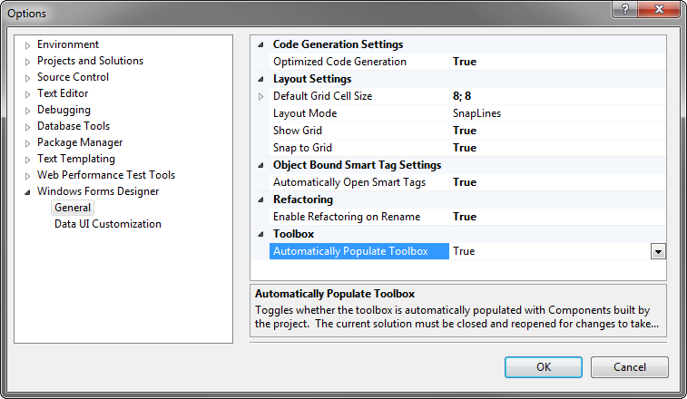

If the Viewer does not show up in the Toolbox, this could be for several reasons.
Make sure you are indeed working on a Visual C# Windows Forms Project. The easiest way to check this is by looking in the Solution Explorer. If you do not have a C# icon next to your project and a Form1.cs in your list of classes, close the project and create a new one. This time, make sure it's a Visual C# Windows Forms Project.
See if you have a Viewer.cs file in the Solution Explorer. If it's not there, the Imint.Vidview.Sample.UserControl package has not been successfully installed. Go back to the NuGet Package Manager and install it.
If Viewer.cs has successfully compiled, try double clicking it. This brings up the Windows Forms Designer for Viewer.cs. You should see an empty, gray area. If you are instead seeing a list of error messages, make sure your NuGet packages are up to date.
If Viewer.cs is in the Solution Explorer, it should have a User Control icon next to it. If not, it has failed to build. In that case, right-click Viewer.cs and select "Properties" the bottom of the list. Make sure that its "Build Action" is set to "Compile".
If the Viewer still isn't showing up in the Toolbox, try creating a new UserControl and see if it too fails to show up in the list. If so, go to Tools -> Options -> Windows Forms Designer -> ToolBox -> Automatically Populate Toolbox and make sure it's set to True. Rebuild and try again.
